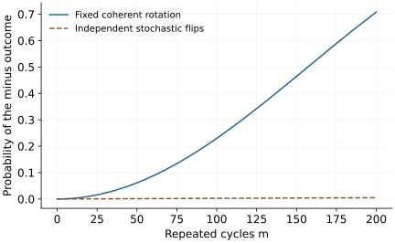

Research question
Can quantum devices remain controllable as they grow?
A scalable device must preserve useful control and verifiable performance as calibration, connectivity, and correlated errors grow.
A worked entry into an open research direction · Sources checked 20 October 2026
The question in perspective
Adding qubits also adds couplings, calibration parameters, readout channels, and opportunities for correlated errors. The research question is not how to increase one headline number. It is how a growing device can execute a specified workload with a reliable error budget and evidence that supports its claimed behavior.
Small coherent errors can accumulate
A controllable two-level system is often modelled in a rotating frame by
\[H(t)=\frac\hbar2\left[\Omega_x(t)X+\Omega_y(t)Y+\Delta(t)Z\right].\]
Here \(X,Y,Z\) are Pauli matrices; \(\Omega_x,\Omega_y\) are control amplitudes in angular-frequency units, and \(\Delta\) is detuning. This is an effective two-level description. Leakage into other levels and coupling to neighbors need additional terms.
Suppose an intended identity acquires an unwanted Z rotation \(U_\epsilon=e^{-i\epsilon Z/2}\) each cycle. On \(\ket+=(\ket0+\ket1)/\sqrt2\), repeating the same error \(m\) times gives probability
\[p_-(m)=\left|\bra- U_\epsilon^m\ket+\right|^2=\sin^2\!\left(\frac{m\epsilon}{2}\right).\]
For small \(m\epsilon\), this is approximately \(m^2\epsilon^2/4\). A stochastic Z-flip model with one-cycle probability \(q=\sin^2(\epsilon/2)\) matches the one-cycle probability but predicts
\[p_-^{\rm stochastic}(m)=\frac{1-(1-2q)^m}{2}\approx mq.\]
For \(\epsilon=0.01\) radians and \(m=100\), the coherent error gives about 0.230, while the stochastic model gives about 0.00249. A single short calibration measurement cannot establish which long-circuit model applies.
Evidence also has a sampling cost. For independent \(\pm1\) observations of a fixed observable, Hoeffding’s inequality gives
\[\Pr(|\bar O-\langle O\rangle|\geq\delta)\leq2e^{-M\delta^2/2}.\]
Thus \(M\geq2\ln(2/\alpha)/\delta^2\) suffices for error \(\delta\) with failure probability at most \(\alpha\). This certifies that observable under the independence assumptions, not a complete many-qubit process.

What is established
Randomized benchmarking estimates controlled summaries of gate performance while handling certain preparation and measurement effects. Its interpretation depends on the noise assumptions; a fitted decay is not a full worst-case error characterization.
Preskill’s NISQ perspective explains the tension between imperfect control and useful computation. A below-threshold surface-code memory experiment demonstrates error suppression in a particular device and protocol. It supplies evidence for that task, not a blanket certificate for arbitrary algorithms.
What remains unresolved
The challenge is to maintain and certify workload-relevant performance despite drift, crosstalk, leakage, and limited calibration time. Full process tomography scales prohibitively for general systems. Research needs narrower, useful guarantees that can actually be measured and that remain valid as system size and circuit depth increase.
A concrete next investigation
Reproduce: plot the coherent and stochastic accumulation curves using the same one-cycle probability. Identify depths at which their predictions separate beyond sampling uncertainty.
Check: simulate a slowly drifting detuning and explain why independently sampling a fresh error each gate changes the model.
Extend: design a small family of experiments that distinguishes coherent drift from stochastic noise with a stated shot budget. Assess whether the inferred model predicts a held-out workload. The useful result is predictive validation, not merely a better fit to calibration data.
Selected references
- Robust randomized benchmarking of quantum processes
Easwar Magesan, J. M. Gambetta, Joseph Emerson. 2010. Research paper
Develops a protocol for estimating average gate errors with stated assumptions about noise.
- Quantum Computing in the NISQ era and beyond
John Preskill. 2018. Perspective
Frames the relationship between noisy processors, useful computation, and fault tolerance.
- Quantum error correction below the surface code threshold
Rajeev Acharya et al.. 2024. Experimental research
Reports surface-code memories with improving logical performance as code distance increases in the tested regime.
Years refer to first arXiv submission. Publication details are available in the linked records.